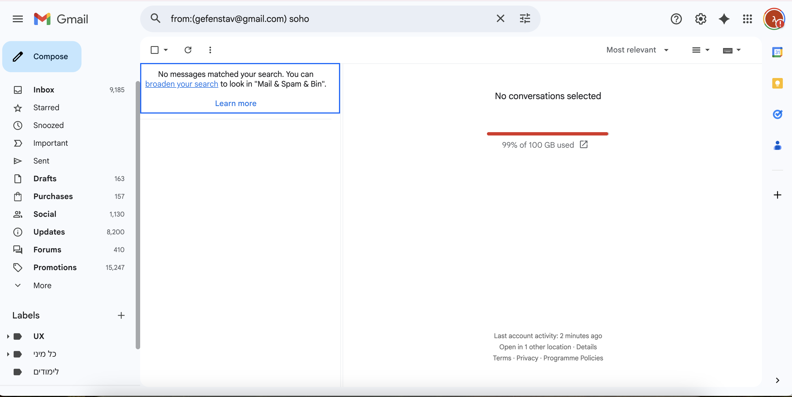
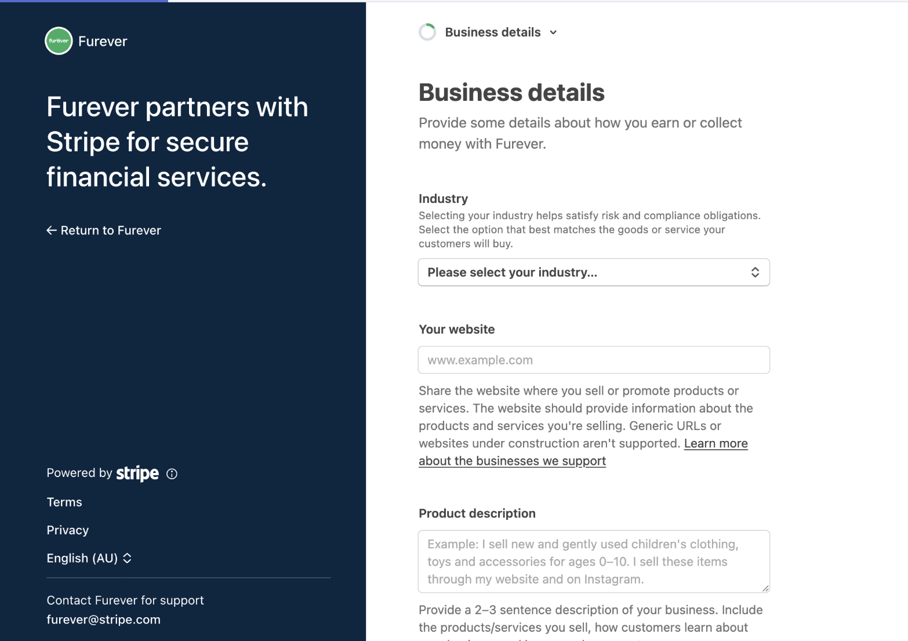
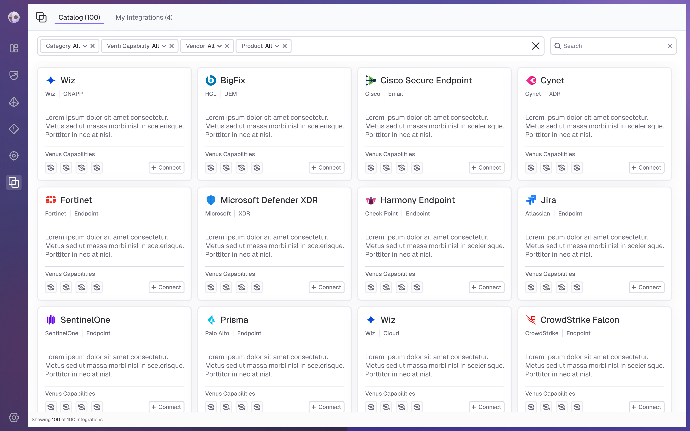
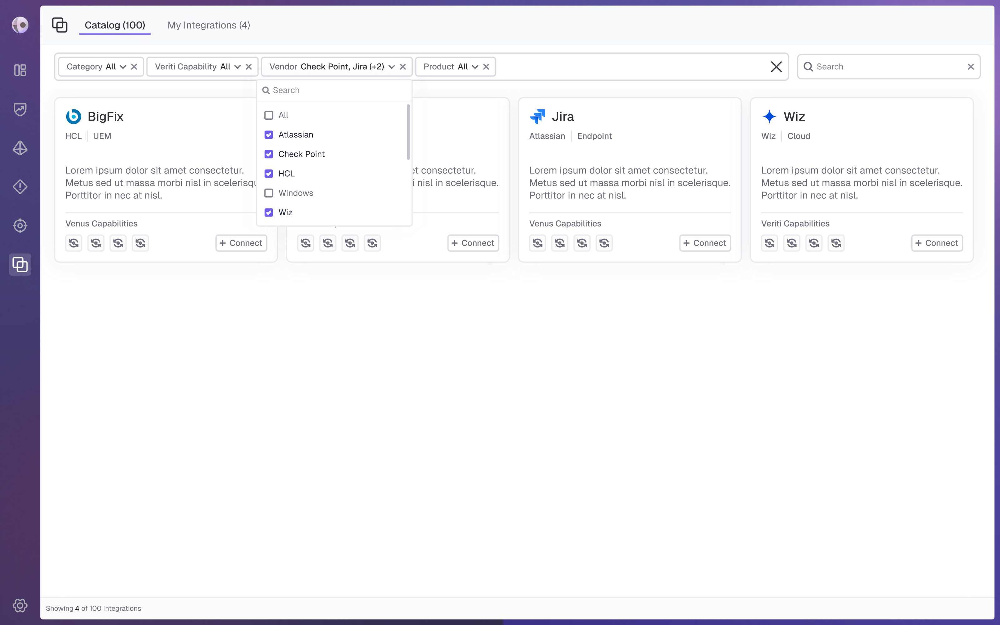
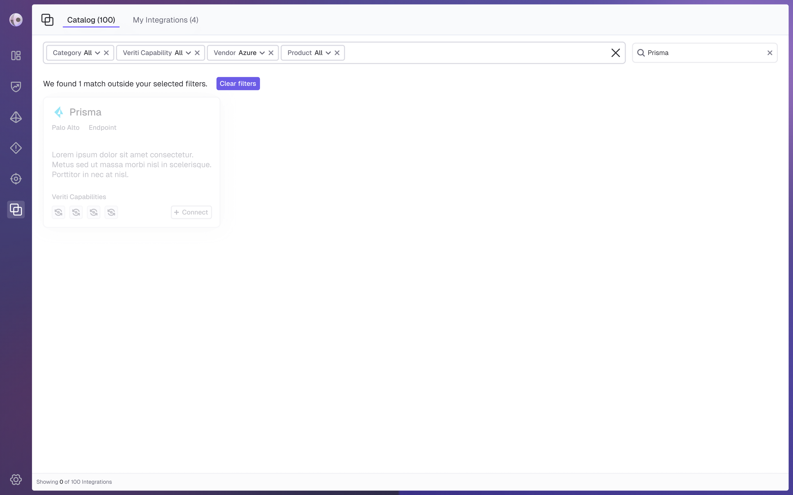
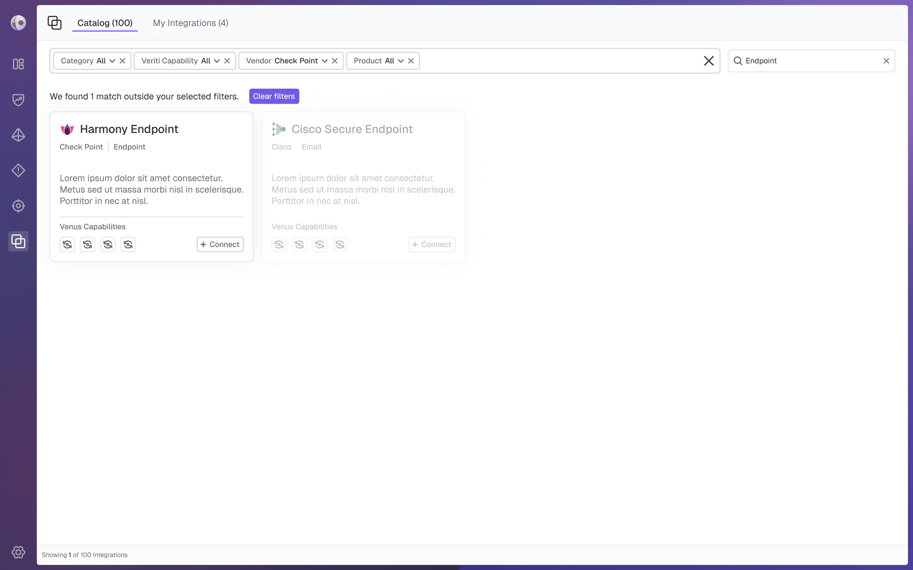
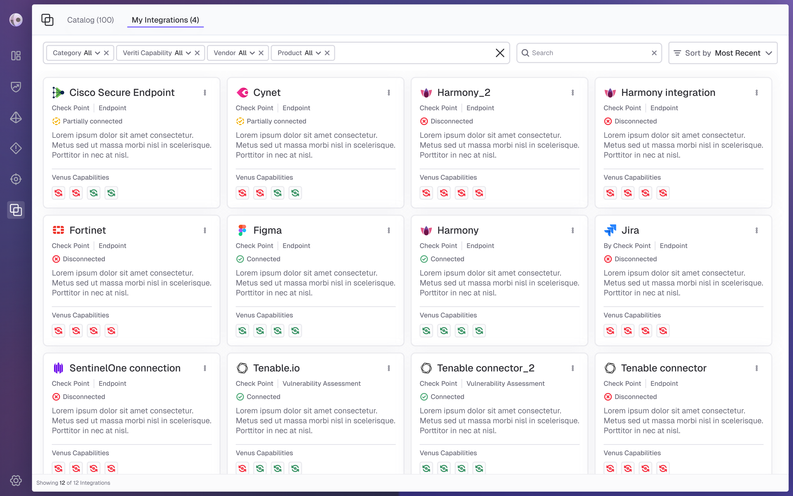
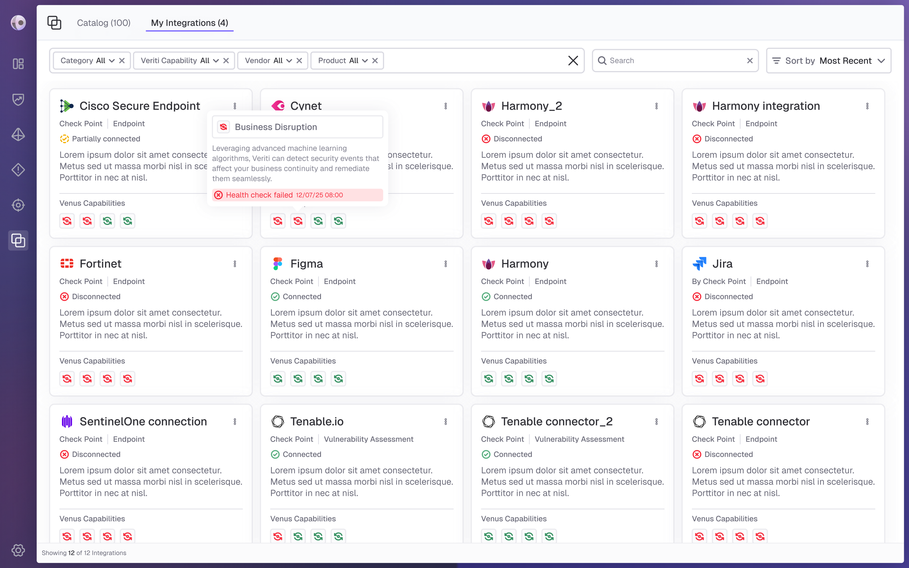
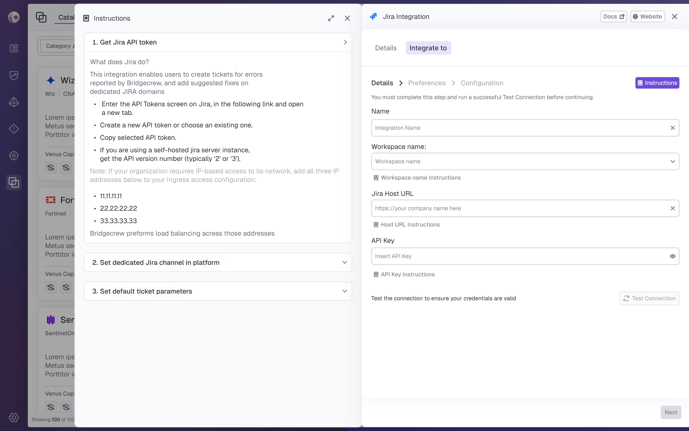

Venus
Responsabilities: UX, Research

Venus is a cybersecurity platform that identifies and prioritizes exposures and misconfigurations across cloud and on-prem environments, aligned with business priorities. Its integrations page is part of a comprehensive integrations experience, including a catalog and a full flow that allows users to easily discover, configure, and manage integrations in one place.
The Problem:
In complex cybersecurity platforms, integrations are essential for connecting systems and maximizing value, but the experience of discovering, understanding, and managing them is often fragmented and unintuitive. Users struggle to find relevant integrations, evaluate their suitability, and manage multiple instances effectively, resulting in friction and underutilization.
Pain Points:
Users need to quickly find relevant integrations and decide whether to connect
Supporting multiple integrations per platform creates challenges in both discovery and management
Creating a fast and intuitive integration experience despite the inherent complexity and information overload
Our Goals:
Enable users to easily manage, discover, and connect integrations, including multiple instances per platform, through a clear and intuitive experience.
Ron is a senior security analyst who investigates threats and manages multiple integrations. He needs clear visibility into integration functionality and status, with a fast, simple setup and management experience.
Frustrations:
Confusion when managing multiple instances of the same integration
Difficulty finding relevant integrations quickly due to poor search and filtering
Integration setup is time consuming and lacks clarity
Needs:
A clear and centralized view of all integrations, including their status
Quick and efficient search and filtering to find relevant integrations
A simple, intuitive, and fast integration setup and management experience
I conducted a competitive analysis of platforms with integrations focused pages to understand how discovery and management experiences are structured and prioritized. Combined with insights from the PM, this research helped define what information users need at different stages, when exploring new integrations versus managing existing ones, and highlighted patterns for creating a more intuitive, scalable, and user friendly experience.
Research Findings
Advanced search & filtering
Providing robust filtering capabilities combined with helpful textual guidance to support users in quickly finding relevant integrations.

Embedded guidance in setup flows
Integrating clear, step by step instructions within the integration process to help users understand what actions are required and reduce friction.

Ideation & Wireframing
Based on the persona's needs, key problems, and competitive research, I created mid- to high-fidelity mockups for the integrations experience. I separated the flow into two dedicated screens: one for discovering new integrations and another for managing existing ones, while keeping the experience consistent across both. The design focuses on clear information hierarchy, easier evaluation and setup, and support for managing multiple integration instances, while reducing cognitive load and creating a scalable, intuitive experience.
Integrations Catalog
During wireframing, we explored whether the Connect action should appear directly on each integration card or only within the expanded view. To reduce friction and support quick decision-making, the final design places key integration details and the Connect action directly on the card, while keeping additional information available when needed. Search and filters are kept easily accessible at the top of the page. To prevent users from unintentionally narrowing results too much, contextual hints notify them when active filters or search terms may be hiding relevant integrations.

Managing Integrations
The managing integrations view gives users a centralized overview of connected instances, statuses, and capabilities. During the design process, we explored different sorting methods and chose flexible sorting, with Most Recent as the default. To reduce clutter, management actions were moved from the cards to a dedicated side panel, keeping the main view clean and easy to scan.

Integration Setup
The setup flow guides users through the connection step by step. Instead of relying on external instructions, contextual guidance is embedded within each relevant step, reducing cognitive load and keeping users focused. Instructions can be expanded or collapsed as needed, providing support without cluttering the interface.

Final Design






